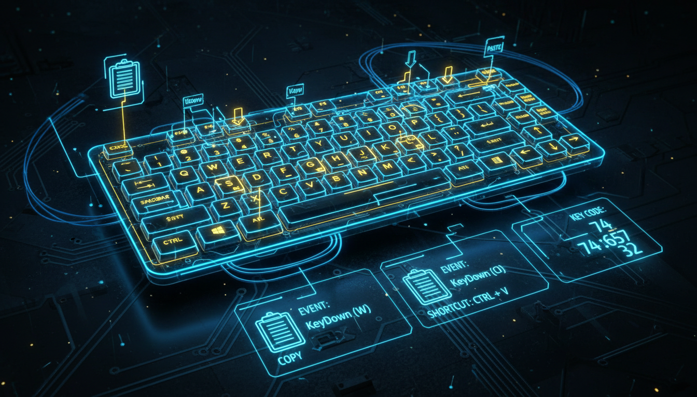

KeyDown, KeyUp, KeyPress, обробка клавіш

// Підписка
this->KeyPreview = true; // Отримувати події до контролів
this->KeyDown += gcnew KeyEventHandler(this, &MyForm::OnKeyDown);
this->KeyPress += gcnew KeyPressEventHandler(this, &MyForm::OnKeyPress);
// KeyDown - фізичне натиснення
void OnKeyDown(Object^ sender, KeyEventArgs^ e) {
// Модифікатори
bool ctrl = e->Control;
bool shift = e->Shift;
bool alt = e->Alt;
// Код клавіші
switch (e->KeyCode) {
case Keys::F1:
ShowHelp();
e->Handled = true;
break;
case Keys::Escape:
this->Close();
break;
case Keys::S:
if (ctrl) { // Ctrl+S
SaveFile();
e->Handled = true;
}
break;
}
}
// KeyPress - символьне введення
void OnKeyPress(Object^ sender, KeyPressEventArgs^ e) {
// Фільтрація вводу
if (!Char::IsDigit(e->KeyChar) && e->KeyChar != 8) {
e->Handled = true; // Ігнорувати нецифрові символи
}
}